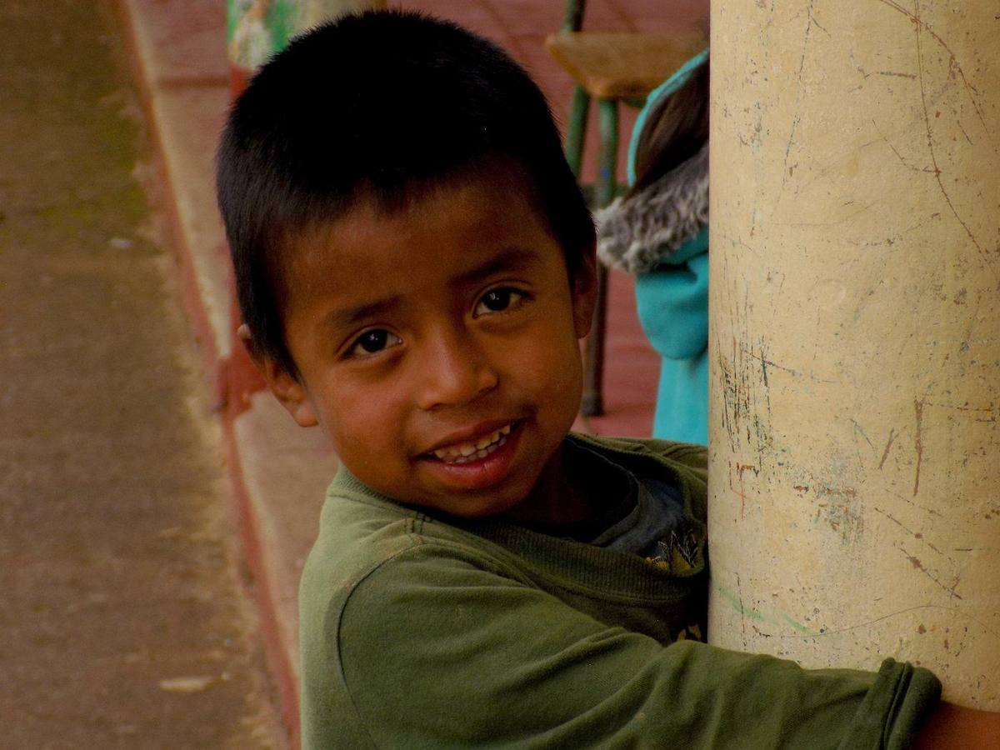

We break the cycle of poverty through education
A nonprofit supporting children in the Guatemalan highlands since 1952.
GuateStar is a 501(c)(3) nonprofit based in the United States, with an office in San Cristóbal Totonicapán.
We support girls, boys and young people in rural communities of Totonicapán through quality education, holistic support and leadership development, so they find a real opportunity and follow it all the way.
We have learned that temporary aid doesn’t work, so we build lasting relationships with each child and their family within their own community. We don’t hand children a ready-made future: we help them develop their talents to fulfill their purpose, and that opens doors that were once closed. Each child decides how far to go.
Expanding minds, touching hearts, changing lives
We walk alongside Guatemalan youth so they can complete a quality education that prepares them for a productive life and for eternity.
Expanding minds
Education that opens doors, not just fills classrooms.
Touching hearts
Values and support that last for years.
Changing lives
A generation that decides its own future.
Our values
We surround every child with an environment that builds character.
- Love
- Integrity
- Innovation
- Collaboration
- Hope
How we work
- Quality over quantity. The kind of person we help shape matters more than the number of children who go through a program.
- Staying in school. Success means they don’t drop out: from elementary to middle school, to high school or INTECAP, and on to college.
- Leadership learned by serving. Those who start as participants become volunteers and then facilitators.

Enrolling children isn’t the problem; keeping them is
Nearly 90 of every 100 children who start elementary school in Guatemala leave the system before college. GuateStar works right on that stretch: helping every child move on to the next level.
- 11 in 100 children who start elementary school reach college.
- Middle school is the lowest point: 76% retention, compared with 89% in elementary and 84% in high school.
- 44 % of the country’s college students study in the department of Guatemala; Totonicapán is among the low-enrollment departments, along with Quiché, Huehuetenango and Sololá.
- Main causes of dropout: informal work, migration, early pregnancy and being over-age for grade.
Approximate figures. Source: “The Structural Funnel” analysis.
The GuateStar pathway: six stages, from Club Extra to college
Each stage opens the door to the next. Those who move ahead can come back as volunteers or facilitators to support other children.
- Stage 1
Club Extra
Educational and technology activities in the community.
332 children on average
- Stage 2
Volunteers
They help with projects.
11 volunteers
- Stage 3
Facilitators
They lead activities and set an example.
6 facilitators
- Stage 4
Mentors
Business challenges over 16 weeks.
14 of 22 completed
- Stage 5
High school or INTECAP
Scholarships after 9th grade.
11 + 1 scholarship students
- Stage 6
College or technical program
The final step on the pathway.
4 scholarship students, 5 future graduates
2026 figures.
From one classroom to eight communities
It all started with a program that decided not to let go of anyone. In Chuixacol, Momostenango, a village of 18 families, seven children formed the first Club Extra. A decade later, 534 children are enrolled in eight communities in Totonicapán.
- 1952
We began supporting children in the Guatemalan highlands.
- 10 years ago
Seven children form the first Club Extra in Chuixacol, Momostenango.
- 2023
4 communities, an average of 155 children and 98 families.
- 2024
We installed our first internet antenna; 5 communities and 220 children.
- 2025
First recorded high school graduate and 3 college graduates.
- 2026
8 communities, 285 families and the new Chispa platform.

IMPULSOS
Following God’s signs to leave a lasting legacy is Lorenzo Anderson’s devotional autobiography: a testimony of faith, family and God’s promptings throughout a life. It includes the full 154-page book, the audiobook and videos of historic moments.
Read IMPULSOSWho leads the work
Ken Anderson
Chief Executive Officer, United States
Edwin Benjamín Cáceres Aguilar
Director of GuateStar, Guatemala
Alongside them serve 11 volunteers and 6 facilitators, many of them former Club Extra participants. Learn about our approach.
No one gets there alone

There are children waiting for someone to believe in them
See the impact of your support, give today or join us as a volunteer. Every decision counts.